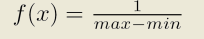

Probability density function
________________
Open classes model transaction workloads where the number of requests in the system fluctuates over time and transactions arrive at the system as if generated by an infinite source. The arrival pattern is well described by a probability distribution, in particular, the distribution of the interarrival times of consecutive transactions, or customers.
A probability distribution f(x) is characterized by :
Mean (if exists):
Variance (if exists):
c, Coefficient of Variation, only if mean and variance exist and mean is not zero:
JSIMwiz allows you to use any of the following probability distributions:
Probability density function:
The mean is equal to k, which is the parameter you must specify. This distribution describes a constant flow of customers, arriving exactly every k time units.
Probability density function
The Erlang distribution is a continuous distribution, with 2 parameters: the shape r, an integer value, and the rate α, a real value. It is a special case of Gamma distribution where the shape parameter is an integer.
Γ(t) is called Eulero function and is defined by
When r is a real non null positive integer, as in the case of the Erlang distribution, the Eulero function reduces to Γ(r)=(r-1)!
A random variable (r.v.) with Erlang distribution of order r can be obtained as a sum of r exponentially distributed random variables with mean 1/rα.
When you change the values of α and r, the system will automatically adjust the mean = = r/α and the variance σ^2 = r/α^2.
A family of probability density functions that illustrate the impact of various (α, r) pairs is shown below.
Probability density function
This is a continuous probability distribution where λ > 0 is the distribution parameter, often called the rate parameter; the distribution is supported on the interval [0,∞).
The exponential distribution is used to model Poisson processes, which are processes describing state changes of a system that occur with constant probability per time unit λ. In this case, the time interval between two consecutive changes is described by an exponential random variable with parameter λ. Therefore, if the system is in state A at time t = 0, the integral of f(t) from 0 to T over t represents the probability that the system is in state B ay time t = T.
When you select this distribution, the parameter λ is requires (real number) and the mean is computed as while the variance is
A family of probability density functions is shown below, for a set of λ values.
Probability density function
This is a continuous probability distribution. The parameters are the shape α and the scale λ, both real numbers.
When you choose the Gamma distribution, you can either provide α and λ or the distribution mean, equal to α*λ and the variance α*λ^2. A family of probability density functions is shown below, for a set of α and λ values.
Probability density function
A hyperexponential distribution describes a random variable similar to an exponential but with more variability since it is the result of a weighted sum of two independent exponentially distributed random variables, with paramters λ1 and λ2 respectively. The weight is the probability P that the random variable behaves like the exponential variable with parameter λ1 and 1-P that it behaves like the exponential variable with parameter λ2.
When this distribution is used to model the customer interarrival time at a station (or the service time at that station), with probability P the next interval before an arrival (service time) is distributed like the upper branch in the figure above and with probability 1-P it will be distributed like the lower branch in the figure.
A family of probability density funtions is illustrated in the picture below. Note that when λ1= λ2, the hyperexponential reduces to a simple exponential.
Probability density function
The Normal distribution is also called Gaussian since its probability density function is the Gaussian function. It is well known for its bell-shaped density function.
The two parameters are μ=location (real number, it is the mean of the distribution), and σ =scale (real number, it is the standard deviation of the distribution i.e. the square root of the variance). The density is symmetrical around the mean and the variance.
The standard normal distribution is the normal distribution with μ= 0 (mean equal 0) and σ = 1 (variance equal 1).
A family of probability density functions is illustrated in the picture below. The standard distribution is depicted in green.
Probability density function
This distribution usually describes social and economical phenomena (typically, the distribution of wealth, where a small portion of the people owns the larger part of the wealth). It is charcaterized by the parameters k>0, location (real) and α>0 shape (real).
When requested to input the distribution parameters, if k and α are provided, the system automatically derives the mean m = k*α/(α - 1) for k>1 and the variance c
A famility of probability density functions is illustrated in the picture below:
Probability density function
The Poisson distribution describes the number of events occurring over a given time interval, when such events are independent of the amount of time elapsed and they occur at a fix average rate. It is a discrete probability distribution characterized by a single parameter, λ, a positive real number, which is the average number of events in a time unit and its variance.
Thus, the probability of having an arrival in a time interval (t, t+Δt)
is λΔt + O(Δt)), while the probability of more than one arrival in the same interval is O(Δt).
For large time intervals, the distribution is near the mean value, thus
the number n or arrivals over the interval is given by n = λ*T,
where T is the length of the interval
A characteristic of the Poisson distribution is that the time intervals between two consecutive events is exponentially distributed with average Δ.
The parameter λ is not only the mean number of occurrences but also its variance.
A famility of probability density functions is illustrated in the picture below.

When Replayer is chosen, a trace of data can be played back as the source of the distribution for service times or interarrival times. The file format is text/binary with values separated by CR ("Carriage Return"). In order to use this distribution, provide the absolute path name of the file in the input window.
Probability density function
The t-distribibution, or Student t-distribution, is a
continuous distribution characterizaed by the single parameter ν, a real
positive number. It is used when the mean of a normally distributed population
must be estimate using only a small sample size. It is the basis of the
Student-t's test that is used ot evaluate the statistical significance of
the difference between two sample means and for the differencce between
two population means.
It is a special case of the generalised hyperbolic distribution.
The mean is 0 for ν >1 and the variance is ν/(ν -2) for
ν > 2 (infinite otherwise).
A family of probability density functions for a set of ν values are illustrated in the picture below.
Probability density function 
The Uniform distribution is sometimes called rectangular
due the shape of its density function.
It describes a random variable that can assume values over the range
(min, max), its characterizing parameters, with constant probability
equal to 1/(max - min). The probability is 0 outside the range.
When you choose this distribution, you can either provide the pair
(min, max) or the mean m = (max + min)/2 and variance
c = (max - min)^2 / 12.
The probability density function is plotted in the figure below.